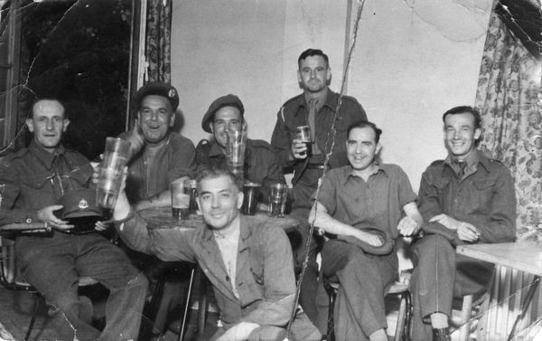

Isaac John Wood was born in Daglingworth, Gloucestershire on October 4th 1918.
Usually known as John or Jack, he was the eldest of 4 children born to Elsie and Isaac Wood.
John enlisted in the Army in October 1939. He first served in the Royal Artillery in the 384th Battery of the 142nd Field Regiment. A Railway Clerk by trade, John was transferred into the Royal Engineers in 1942, serving in the 158th Railway Construction Company. After the declaration of peace in 1945 John volunteered to stay on in the Army and continued his service with the 956th Railway Survey Company until 1946.
